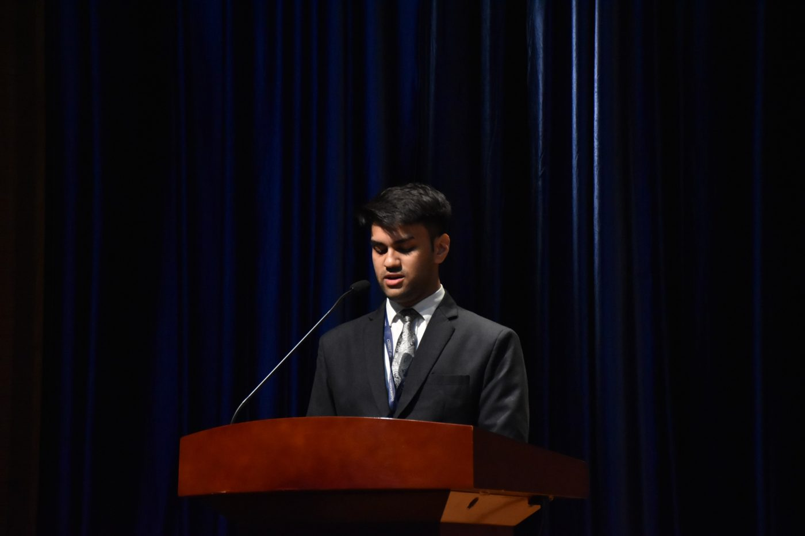
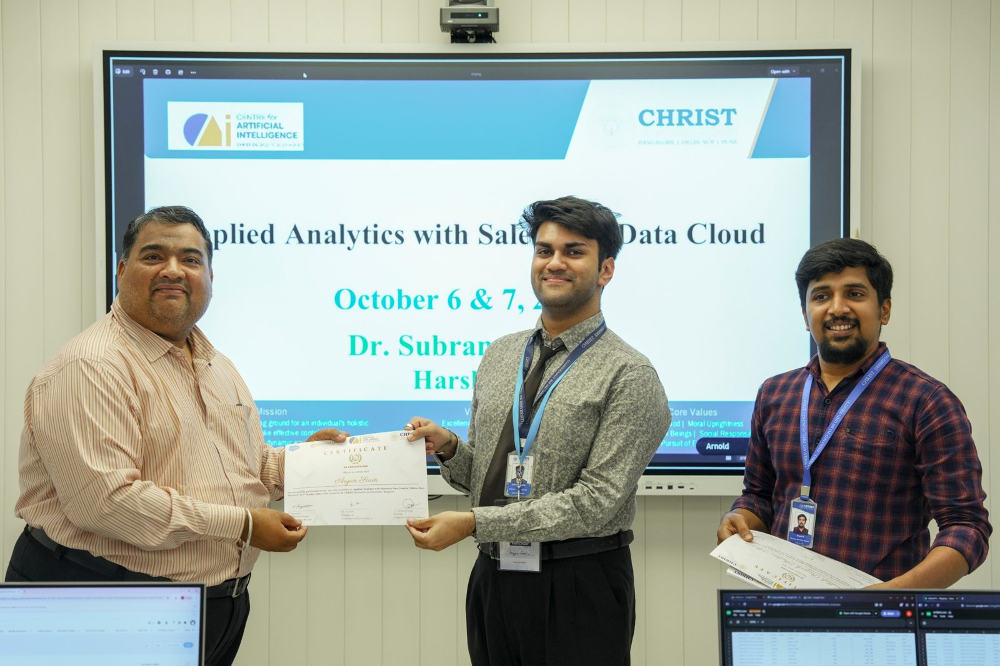

I build statistical models for risk and forecasting. Final-year Data Science & Statistics student at CHRIST University, Bengaluru.
I study Data Science & Statistics at CHRIST (Deemed to be University), graduating May 2027 with a 3.92 / 4.00 GPA. I'm drawn to quantitative research, risk management and asset management, where a model's assumptions matter as much as its output.
I lead teams and speak in public as comfortably as I write code: I coordinated 50+ volunteers for the department's INFLECTRA event, and I regularly present at university events.

Python, R, SQL
Statistical modelling, regression, classification, machine learning, model evaluation, exploratory analysis
Power BI, Tableau, Excel, MySQL, PySpark, Git/GitHub, R Shiny
Analytical problem solving, clear communication, collaboration

Designed and tested prompts for structured problem solving; improved workflow execution speed by at least 50%.
AI hackathon hosted by QRaptorAI.
Led 50+ volunteers across committees for the Statistics & Data Science Association's flagship event.
AWS Cloud Practitioner Essentials (Feb 2026) · Oracle Database Programming with SQL (Oct 2025) · Salesforce Data Cloud & Tableau Next (Oct 2026)
Open to internships and full-time roles in quantitative research, risk and asset management.